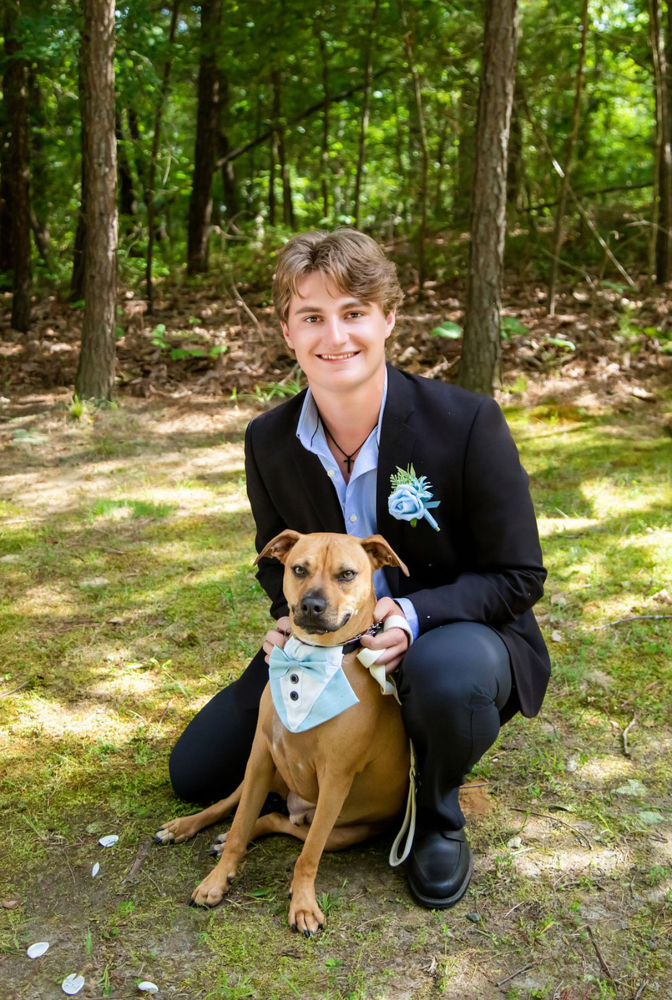

Systems-Focused Computer Science Student | D1 Mascot | Community Volunteer
Designed a persistent, block-based file system using a virtual disk image to simulate OS-level storage management. Engineered custom disk layouts including Superblocks and Free-space Bitmaps.
View CodeEngineered a simulator to evaluate FCFS, SJF, and Round Robin logic. Implemented Process Control Block (PCB) structs and dynamic queues to model context switching.
View CodeBuilt a movie engine in Rust (Imperative) and Prolog (Declarative) to analyze performance differences. Developed a rule-based inference engine for complex queries.
View CodeArchitected C programs for processing NASA datasets using UNIX modularity. Orchestrated data pipelines using Bash scripting and pipes for large-scale processing.
View CodeEngineered a Course Registration API using ASP.NET Core and C#. Implemented a MySQL backend with repository patterns and dependency injection.
View CodeEngineered a dynamic, block-based ecosystem simulation on a 10 x 10 grid to model complex animal interactions and survival logic. Designed a dynamic simulation on a 10x10 grid using polymorphism and inheritance to handle unique animal AI and survival logic.
View CodeSystems-focused computer science student with strong experience in operating systems, low-level programming, and performance optimization. Proficient in C/C++ and UNIX-based environments, with hands-on experience building file systems, CPU schedulers, and high-performance data processing pipelines. Demonstrates a solid foundation in concurrent programming, systems architecture, and efficient algorithm design.
Assembly, C, C#, C++, Haskell, HTML/CSS, Java, JavaScript, Prolog, Python, R, Rust, SQL
Bash Scripting, Git, LaTeX Core, Linux/UNIX, Makefiles, PThreads, Sockets
Concurrent Programming, Operating Systems, Performance Optimization, Systems Architecture
Mascot:
Multisport Engagement: Execute high-intensity performances for Football, Basketball, and Baseball, maintaining brand consistency across different athletic environments.
Community Outreach: Lead the planning and execution of community events, bridging the gap between the athletic department and the local public.
Resilience & Discipline: Successfully balance a year-round travel and performance schedule with a rigorous academic workload.
Public Relations: Act as a non-verbal communicator to engage diverse audiences, representing the university’s values at every appearance.
With over 400 hours of dedicated service, I am proud to have made a tangible impact across Horry County.
Empowering athletes with disabilities through inclusive sports programming.
Mentoring local youth and providing after-school academic leadership.
Promoting literacy in elementary schools and organizing engagement events for senior citizens at Lakes at Litchfield.